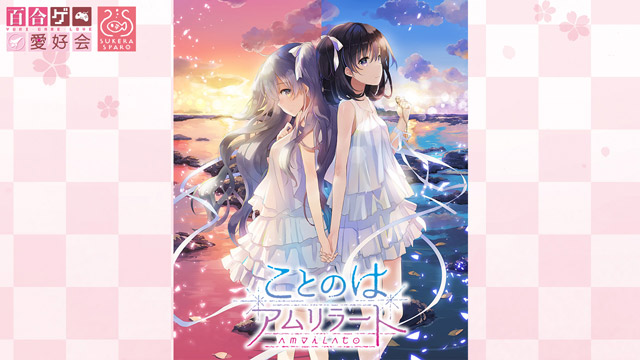

げっちゅぶろぐ様にてコラムを公開
「いつかのメモラージョ×スープカレー・カムイ♡コラボカレーがやってくる！」
みなさん、
Bonan tagon！（こんにちは）
この度、いつかのメモラージョを応援するコラムを担当することになりました、真鶴コウと申します。どうぞよろしくお願い致します。
私がMCを担当させて頂いている『リリーズ・スワンプ・ゲームショウ』という百合ゲームを応援する番組で「ことのはアムリラート」を特集させて頂き、その際、番組内で、ルカ役の内田秀ちゃんと一緒に今回のコラボカレーの中身を決める会議をいたしました。
番組をリアルタイムで見ている皆さんにコメントを貰いながら、一緒にワイワイと作り上げる実に楽しい会議でした。

会場は東京・豊洲。
その日は快晴で風は涼しく、海の香りが気持ちの良い日でありました。
簡単にまとめますと
・ルカがトマト嫌いなので、みんなに食べてやっつけてもらおう！
・ルカ8歳も食べられるフルーツいっぱいのカレー（秀ちゃんがフルーツ大好きなんだそうです）
・柚美押しの真鶴のために柚子を入れてほしい
・秀ちゃんの好物、イチゴ大福を入れてほしい
などなど……。
その様子をご覧になった諸橋店長は、後にTwitterにて「過去最高難度のオーダー」と評するほどのものになりました。
よろしければ、詳細につきましてはYouTubeのアーカイブでご覧ください。
https://www.youtube.com/watch?v=FZG_ari5zZI&feature=youtu.be
そして、運命の試食会。担当K氏とお邪魔して参りました。
それではご覧ください、いつかのメモラージョ×スープカレーカムイコラボカレーです！